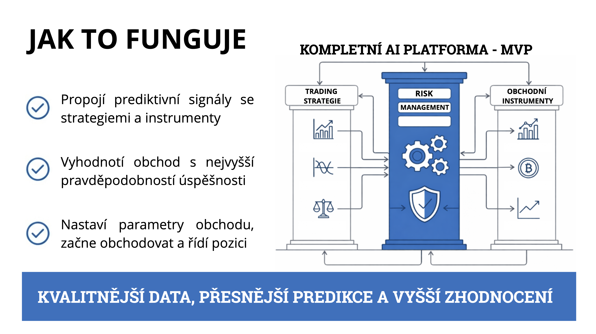

ROBOOTEC není jeden trading bot.
Je to komplexní AI platforma, která propojuje prediktivní signály s různými obchodními strategiemi a finančními instrumenty.
Systém analyzuje tržní data a vyhodnotí obchod s nejvyšší pravděpodobností úspěchu.
Následně nastaví parametry obchodu – velikost pozice, stop loss, risk management – a obchod automaticky otevře.
Systém zároveň průběžně monitoruje vývoj trhu a aktivně řídí průběh obchodu.
Cílem je dosáhnout kvalitnějších predikcí a dlouhodobě vyššího zhodnocení kapitálu.